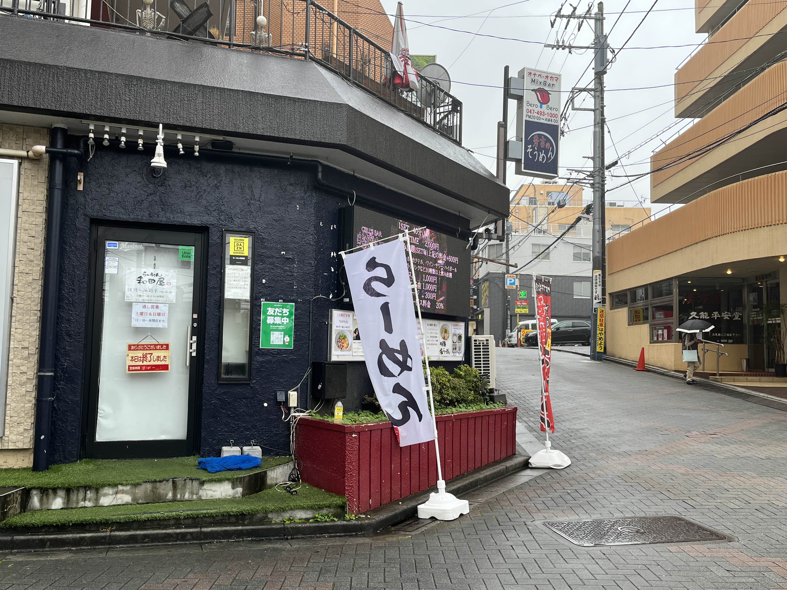
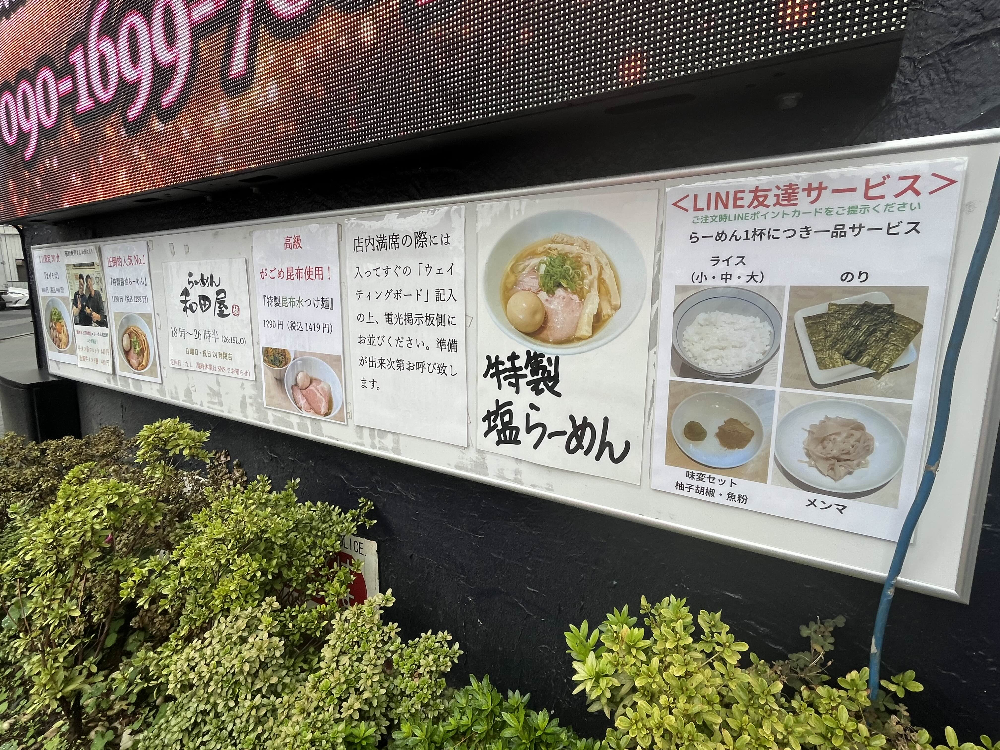
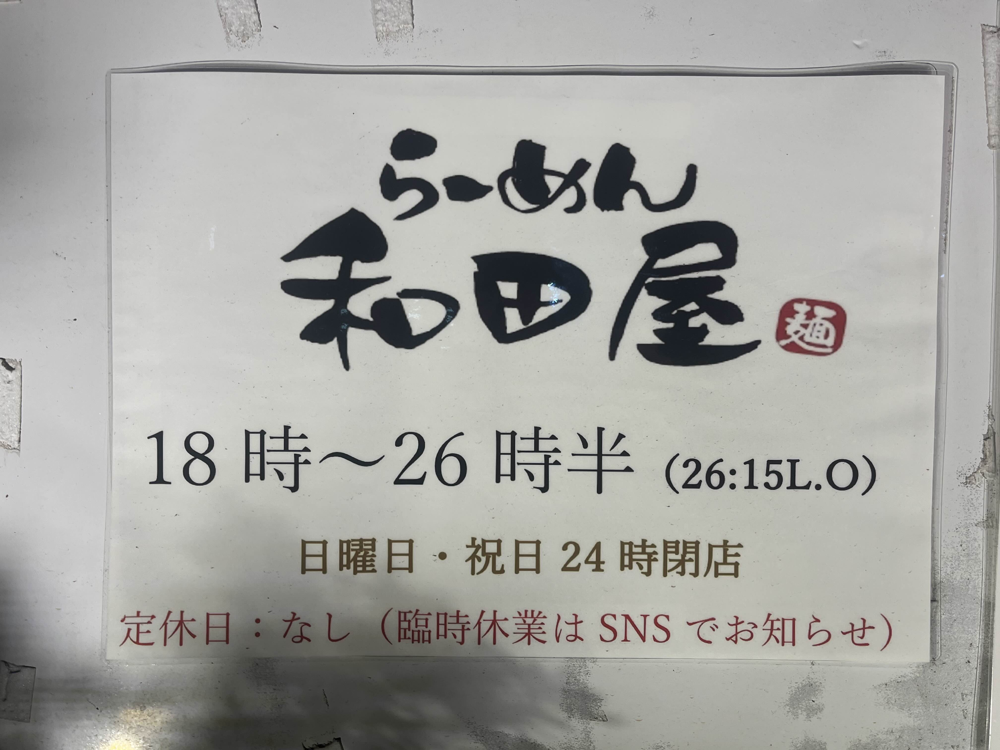
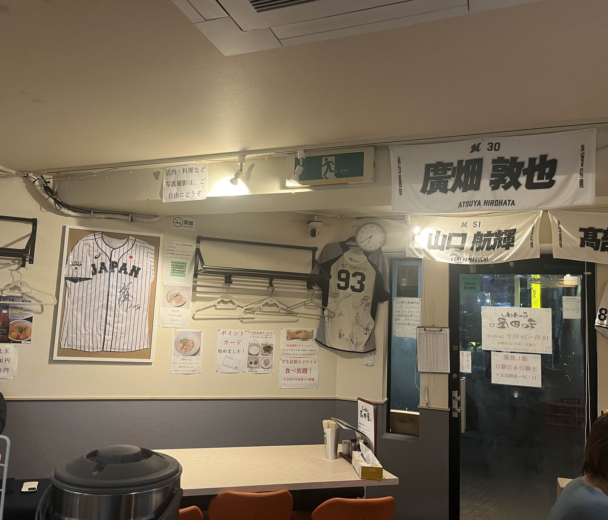
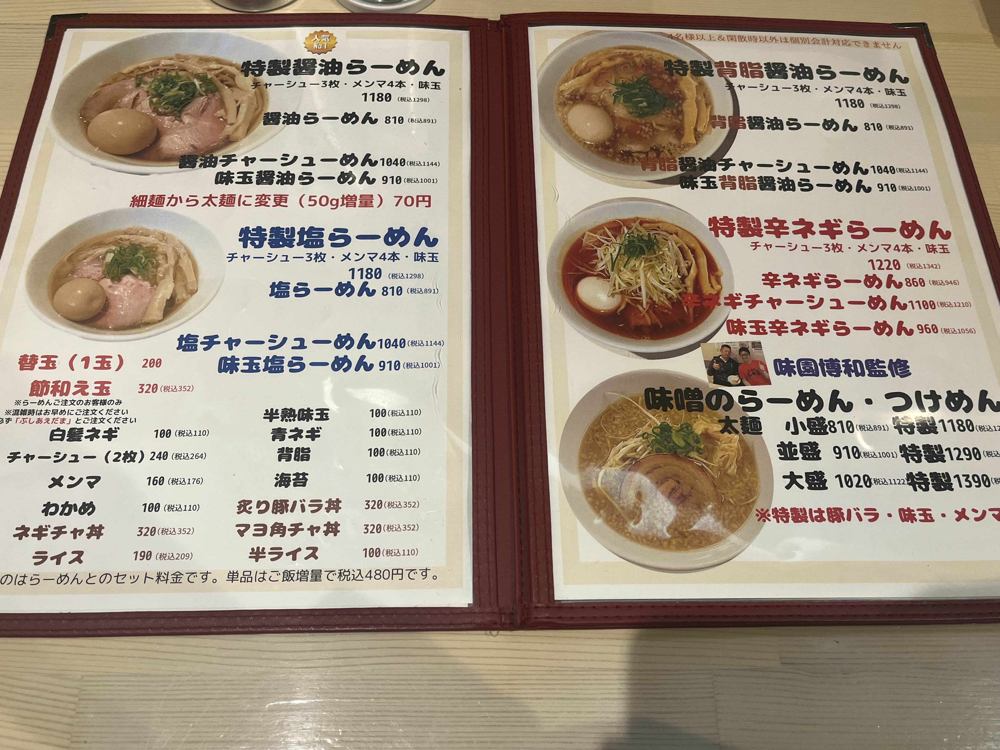
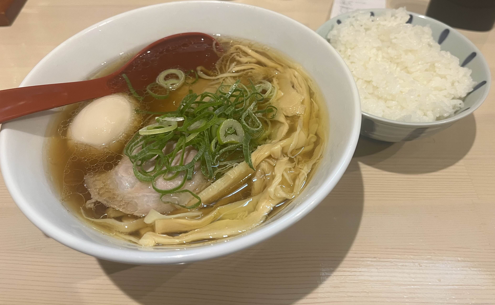

紹介するのは津田沼駅から徒歩５分のところにあるらーめん和田屋です。
少し入り組んだ道を進んだ先にある曲がり角にあるそのお店は、
まさに隠れた名店といえるでしょう。
そんならーめん和田屋ですが、千葉ロッテマリーンズの関係者が良く来ることから、ファンの間で聖地とされているようです。
らーめん和田屋は、夜１８時からの開店となっています。
これは私の所感ではあるのですが、夜から開く飲食店というのは非常に珍しく、
我々学生からしたら、未知のダンジョンに潜りに行くような"特別感"を味わうことができます。
逆に夜18時～26時半までしか開店していないため、時間には十分な注意が必要です。

店内のメニュー表を見てみれば、値段は800円から1200円とお手ごろな価格設定となっている
LINE登録で無料で白米などをつけることができ、想像以上の満足感を得ることができます。
そしてさらに、学生であれば白米が無料！
食べ盛りである学生にも優しいお店となっています。

そんな感じで実際に食べてきました。
私が食べたのは特性醤油ラーメンです。
値段は少々高いですが、値段に相応な味と量です。お米も炊き立てのものをいただき、ラーメンとともに美味しくいただけました。
